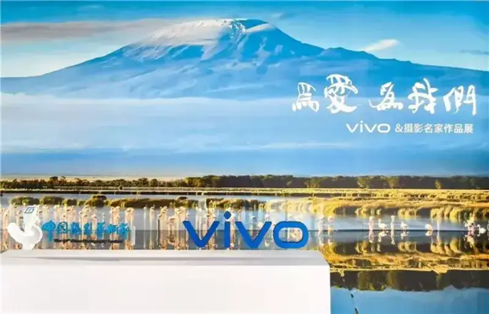
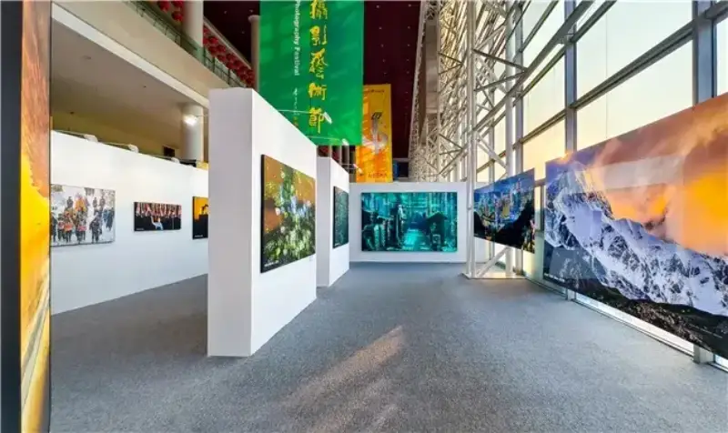
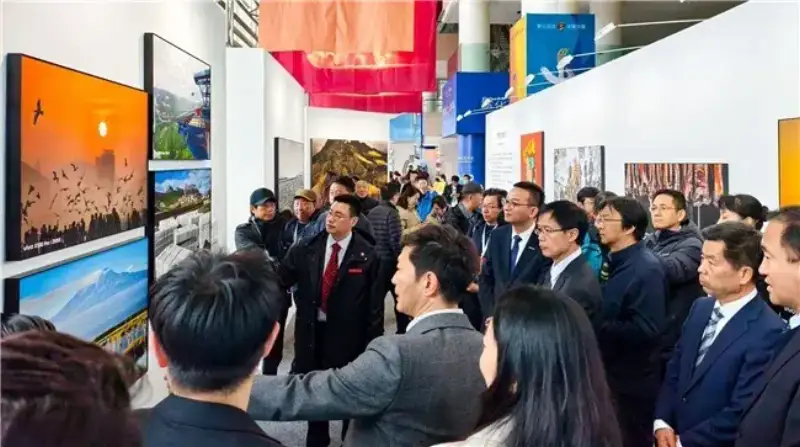
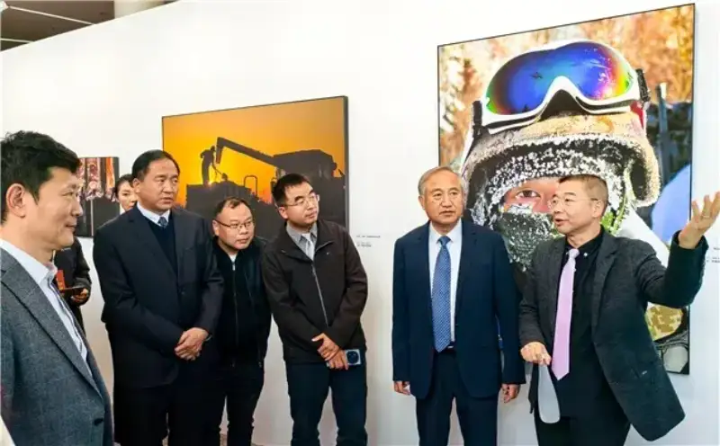

On November 23, the 15th China Photography Art Festival opened in Sanmenxia, Henan. As a leader in mobile imaging, vivo became a strategic partner of the China Photography Art Festival, the top photography event in China. As its only smartphone partner, vivo works closely with professional photographers on many fronts to explore the broad future of mobile imaging.
The China Photography Art Festival is hosted by the China Photographers Association and was founded in 1989. It is one of the earliest and most widely followed photography festivals in China. Its China Photography Golden Statue Award is the top national individual award in photographic art, and it has witnessed the brilliant path of countless master photographers.
On this national stage, vivo and the China Photographers Association signed a long-term strategic framework agreement. They announced they will jointly hold the first China Mobile Imaging Exhibition. The festival also set up the vivo Image Hall, themed For Love, For Us. It shows outstanding works shot on vivo phones by many winners of the China Photography Golden Statue Award and other master photographers, a rich visual feast.
Strategic partnership with the China Photographers Association opens a new future for mobile imaging
For a long time, vivo has stayed user-driven and, together with partners, kept pushing the technical edge of mobile imaging. It aims to give consumers a professional imaging experience that fits people's needs. This strategic partnership with the China Photography Art Festival marks a deeper bond between vivo and professional photographers.
On opening day, vivo and the China Photographers Association held a high-level meeting and a signing ceremony for the long-term framework agreement. Attendees included Li Ge (vice chairman of the China Federation of Literary and Art Circles and chairman of the China Photographers Association), Zheng Gengsheng (party secretary and standing vice chairman of the Association), Xu Xiangfeng (deputy party secretary and mayor of Sanmenxia), association vice chairmen Wang Chen, Liu Luyu, Li Shufeng, Yang Yueluan, Wu Jian, Song Jing, Pan Chaoyang, and Ju Peng; Ju Yang (party group member and secretary-general of the Association), Wang Qinghua (member of the standing committee and propaganda chief of Sanmenxia), Yang Hongzhong (vice mayor of Sanmenxia), Jia Jindong (vivo brand vice president), and Zhao Yangliang (vivo general manager for Henan). Also present were heads of association member groups and departments, guests from Henan and Sanmenxia, representatives of this year's Golden Statue winners, and vivo dealers. Liang Kewei, chairman and CEO of China Photographic Publishing and Media, hosted the ceremony.
Jia Jindong (vivo brand vice president) and Zheng Gengsheng (party secretary and standing vice chairman of the Association) signed the long-term framework agreement on behalf of vivo Mobile Communications and the China Photographers Association.
Xu Xiangfeng, deputy party secretary and mayor of Sanmenxia, said: Sanmenxia welcomes friends from all sides with an open and inclusive spirit, to share opportunities and win together. Today, the signing ceremony for the long-term framework between the China Photographers Association and vivo is held here, which is a major event. The Association is an authoritative and professional body in China. From a professional point of view, it can offer practical experience for mobile imaging. Built on mobile imaging technology, it keeps pushing the spread and growth of phone photography art. As the strategic partner and the only smartphone partner of this festival, vivo has set a new industry benchmark in imaging through its sustained research, and it empowers professional creation. This strong partnership will surely help build a new future for Chinese mobile imaging.
Jia Jindong, vivo brand vice president, said: 2024 is vivo's tenth year of deep work in imaging. Signing this long-term framework with the China Photographers Association at this point means a lot to vivo. It builds a bridge between vivo and professional photographers at home, so that vivo's imaging technology and user experience gain wider recognition from experts. We look forward to working together to explore new directions for mobile imaging, spark more creators, and let mobile imaging be the best record of life today.
Ju Yang, party group member and secretary-general of the Association, stressed: This strategic partnership between the Association and vivo follows five years of contact, talk, and coordination. It recognizes vivo's imaging strength and innovation. It also shows both sides' resolve to combine technology and art, push imaging technology and culture, and deepen innovation in mobile imaging.
With this signing, vivo and the Association announced the first China Mobile Imaging Exhibition. Through open calls for work, they will build a mobile image database and tour the exhibition nationwide. They also plan phone photography training and technical talks online or offline, to spread phone photography culture, explore new industry standards, and together drive the growth of Chinese phone imaging across the ecosystem, culture, and industry.
Working closely with master photographers to build a rich mobile imaging ecosystem
As the mobile imaging era arrives, fast-moving mobile technology now meets daily shooting needs and also supports professional creation. Works shot on vivo phones by several Golden Statue winners and master photographers appeared at the 15th festival under the theme For Love, For Us. The fresh design and format gave viewers an immersive experience. Large prints, rich in detail and fine in quality, drew wide attention from photographers and fans, and showed vivo's strong imaging tech.


Inside the vivo Image Hall
From lush grass at the foot of great peaks, to gold on the summit of snow mountains. From industrial silhouettes in the glow of sunset, to a steady gaze behind snow goggles. Using the strong imaging power of vivo phones, photographers freeze those grand or delicate scenes. Their boundless vitality reaches deep into the viewer and lingers long.


Guests at the signing ceremony visit the vivo booth
Over ten years in mobile imaging, vivo has kept improving the technology and bringing it to more fields. It has also partnered with Zeiss, the FIRST Film Festival, and the Jimei Arles Photo Festival on cultural projects, building a rich imaging culture and pushing the idea that everyone is a creator. The 2025 vivo Image Plus phone photography contest, held with Zeiss, has also set sail again and invites creators to send in work.
Going forward, vivo will stay user-driven and, with partners, unlock the limitless possibilities of mobile imaging, helping more creators record freely and express themselves in the wide world of light and shadow.